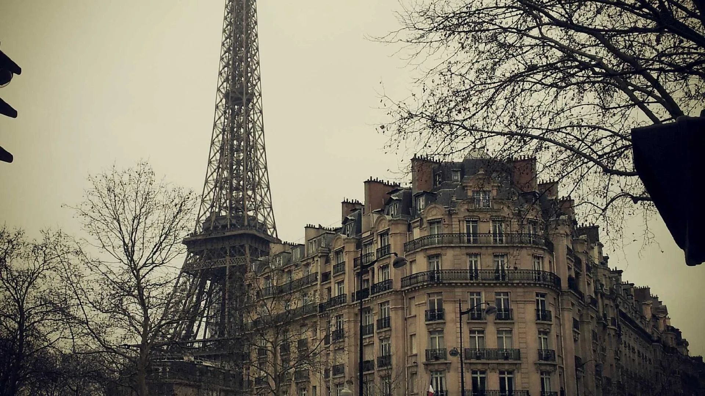

Every dimension of your RESONANCE experience has been considered — from the moment you arrive to the days following your session. This is not simply a treatment. It is a complete ritual of vibrational renewal.
You are received at the door with a warm, unsweetened herbal tea — a blend of lemon balm, passionflower, and holy basil, chosen specifically for their nervine properties. You are invited to remove your footwear and sit in our waiting alcove, a quiet anteroom furnished with amethyst clusters, soft lighting, and gentle ambient sound.
This settling period is not incidental — it is the first stage of the protocol. The body needs time to transition from street-level stimulation into the receptive state that allows sound therapy to penetrate deeply.
Before you enter the Sound Chamber, your practitioner conducts a brief and unhurried consultation. This is not an intake form — it is a conversation about what you are carrying, what you are releasing, and what you are seeking. Your answers directly shape the bowl selection, the frequency sequence, and the session's arc.
For Chakra Alignment sessions, a pendulum reading is conducted at this stage to identify which energy centres require the most attention. For Sleep Journey clients, a brief sleep history discussion helps calibrate the delta entrainment approach.
You recline on a heated amethyst treatment mat, covered with a weighted linen blanket. An eye pillow blocks visual stimulation. The crystals beneath you are arranged in a sacred geometric configuration specific to your intention. Then the bowls begin.
The practitioner moves slowly and deliberately around your body, drawing tones from the bowls in careful sequences — beginning in the lower frequencies to establish ground, ascending through the middle harmonics to open the chest and throat, and reaching the upper registers to expand the crown and third eye. The session is not linear; it is responsive, following the visible signals of your body's release.
Most clients experience states ranging from light trance to profound stillness, sometimes tears, often visions, occasionally sleep. All of these are welcome, natural, and expected.
The bowls fade to silence gradually — never abruptly. After the final tone dissipates, you remain lying in stillness for a minimum of five minutes. The practitioner places a light hand on your feet to provide grounding, then guides you through a brief body-scan practice to begin anchoring the session's effects.
You are gently invited back by your own name, at your own pace. There is no rushing. Integration is as sacred as immersion — it is the stage at which the body's intelligence begins to incorporate the vibrational shifts at a cellular level.
Following your session, you receive a personalised aftercare document — a printed card with specific recommendations for the next 48 hours. This includes hydration guidance, dietary suggestions, recommended somatic practices, and a curated Spotify playlist of supportive frequencies to maintain the resonance field.
Every client has access to our practitioners via WhatsApp for 48 hours post-session. This is not a formality. We actively encourage you to share what arises — dreams, emotional shifts, physical sensations — and we will provide informed, caring responses.
The depth of your session is partly determined by how well-prepared your body and mind are when you arrive. These guidelines are not rules — they are invitations.
Prioritise sleep. Minimise screen time in the evening. Avoid emotionally heavy media or conversations. Spend time in quiet, natural environments if possible.
Eat a light, easily digestible meal at least two hours before your session. Avoid red meat and processed foods. Drink well. Dress comfortably in natural fabrics.
Before you arrive, sit quietly for five minutes and identify what you are bringing to the session. A clear intention gives the healing something to organise around. It does not need to be elaborate — even a single word is sufficient.
Sound healing is not a passive experience — the body actively responds to frequencies even when the conscious mind is still or asleep. Many clients are surprised by the intensity and variety of their experience. We want you to arrive prepared and curious, not guarded.
There is no wrong way to experience a sound bath. Whether you remain analytically alert, drift into visions, or simply sleep, your body is receiving and processing the frequencies. Trust your experience.
Vibration moving through tissue — often felt in the hands, feet, scalp, and chest. Entirely normal and an indicator of strong cellular resonance.
Tears, laughter, or sudden waves of feeling. The body uses sound as a safe portal to release stored emotional material. Surrender to it — it is the session working.
Geometric patterns, colours, light, or imagery behind closed eyes. The brain's visual cortex becomes active during deep brainwave entrainment. This is the beauty of the experience.

The 48 hours following a sound bath are among the most fertile for integration. Your nervous system remains in a heightened state of plasticity. What you do in this window matters.
Remain in quiet. Walk slowly. Do not rush to your phone, traffic, or loud environments. Give the stillness space to settle into your system.
Drink water consistently. If you feel tired, honour it — rest or sleep. The body is processing. Light food only: fruit, soup, whole grains.
Dissolve 2 cups of Epsom salts in a warm bath with 10 drops of lavender oil. Soak for 20 minutes. This draws toxins released by the session and deepens muscular integration.
Write about what arose — dreams, feelings, insights, imagery. Spend time outdoors, grounded, near earth or water. Receive the integration.
Healing often continues to unfold in the week following a session. Mood improvements, sleep shifts, creative breakthroughs, and emotional releases may arrive in waves. Welcome them all.
You now understand what awaits you. The only thing remaining is to step through the door. We will take care of everything else.
Book Your Session